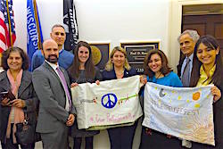
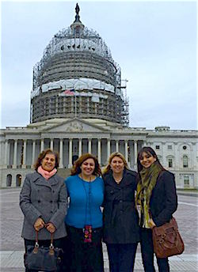
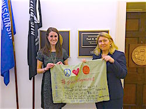

Friends,
Nearly one month ago, we launched Give Refugees Rest to end Islamophobia and welcome refugees.
And I'm happy to report to you that elected officials are listening -- and we have gained such momentum that we're going to expand the campaign further.
Your message taken directly to the Speaker of the House
|

Highlights from Give Refugees Rest
Your support allowed a delegation of FOR supporters, including five refugees and immigrants, to meet directly with the legislative director for Speaker of the House Paul Ryan.
Speaker Ryan's office made some specific commitments to FOR -- but we need to keep up the pressure.
With the incredible momentum behind Give Refugees Rest, FOR is expanding the campaign with new allies from Christian Peace Circle.
Watch for a global day of action on June 20, UN World Refugee Day.
Make a donation now and help us keep up the pressure!
Share GiveRefugeesRest.com with your friends and colleagues!
|
With your support -- and some of your pillowcases -- we sent a delegation of FOR-USA members and allies to the U.S. Capitol.
Last Thursday, Feb. 4, we visited the office of Rep. Paul Ryan, Speaker of the U.S. House of Representatives, where we were received with respect and attentiveness.
We met with Speaker Ryan's legislative director, Katie Donnell, and we brought with us the deep concerns expressed to us by you and other FOR members, including:
- rising attacks on Muslims in the United States;
- a failed U.S. foreign policy in Syria predicated on a false binary: either adopting violence or washing its hands of the conflict, refusing to recognize nonviolent solutions; and
- an immoral political agenda that is resisting refugee resettlement in our nation.
Thanks to your work, we received three specific commitments from Speaker Ryan:
- Speaker Ryan will speak out against anti-Muslim rhetoric, and would accept an invitation to visit the new mosque in Janesville, WI -- his district and home town.
- Speaker Ryan's staff will work with the Nonviolent Peaceforce, represented at our meeting by FOR member David Grant, to explore unarmed accompaniment as a form of refugee protection.
- Speaker Ryan will welcome continued direct contact from FOR-USA and Give Refugees Rest supporters like you.
These are steps in the right direction -- but they're not enough.
Take a moment now to share Give Refugees Rest with friends and colleagues, and let's keep up the pressure on Speaker Ryan and anti-refugee governors.
Spreading testimony from refugees
|

Rev. Kristin Stoneking, with Sahar Alsahlani, Jamila Toro, and Yasi Sherbaf, in front of the U.S. Capitol.
|
Five members of our eight-person interfaith, intergenerational delegation were first- or second-generation refugees or immigrants, hailing from Syria, Iraq, Iran and Romania. Our voices provided direct testimony to the essential contributions of refugees to our national fabric, as well as the dangerous impact of rising xenophobia against people profiled as Muslims, Arabs and immigrants.
The Rock Valley FOR chapter, based in the heart of Rep. Ryan's district in Wisconsin, grounded our visit through a written statement calling for a more humane and welcoming refugee policy, signed by dozens of his constituents.
We also brought with us some of your beautiful #GiveRefugeesRest pillowcases -- including messages from FOR members in Stony Point, NY; Davis, CA; and Asheville, NC.
Our delegation was led by FOR Executive Director Kristin Stoneking, myself, and FOR National Council (NC) Vice-Chair Sahar Alsahlani. The delegation included NC member Ciprian Iancu, former International FOR staffer David Grant, and Yasi Sherbaf, George Katerji, and Jamila Toro.
This was a groundbreaking delegation that was propelled by your support -- and yes, your pillowcases!
Make a donation to allow us to continue spreading the message.
Expanding the #GiveRefugeesRest campaign
|

Rev. Kristin Stoneking, right, with senior staffer Katie Donnell from Speaker Ryan's office.
|
As you know, we launched this campaign on Jan. 12 as a 31-day campaign, targeting the 31 governors opposed to resettling Syrian refugees in their states and Speaker Ryan.
We've gathered so much momentum in the past month that today we're announcing a continuation and expansion of the campaign -- including joining forces with exciting new allies!
On Friday, Feb. 5, four of our delegates -- Kristin, Sahar, Yasi, and myself -- joined over 40 allies in a day-long "We Refuse to Be Enemies" strategy meeting. Convened by Christian Peace Circle, we brainstormed ways to better coordinate our response to the global refugee crisis, renewed advocacy to stop the devastating violence in Syria, and determined to escalate our voices against Islamophobia. Christian Peace Circle includes leaders of Catholic dioceses, evangelical churches, Pentecostal churches, main-line Protestant churches, historic peace churches, Orthodox churches and representatives of major Christian peace networks.
In the coming weeks, FOR-USA will join our allies in the Christian Peace Circle to announce a major campaign to Welcome Refugees throughout our nation.
We need to keep up the pressure, and with these major allies committed to the effort and your continued support, we know we'll have a big impact.
But we need your support in order to make it happen. Can you make a contribution today to help us keep up the momentum?
Look for details about the expanded campaign soon, and circle June 20 on your calendar -- UN World Refugee Day -- as an important date for global action!
In solidarity and the fight for human rights,
 Ethan Vesely-Flad Ethan Vesely-Flad
Director of National Organizing
Fellowship of Reconciliation
|